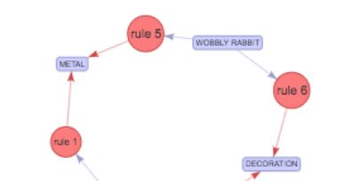

Learning Associations
Posted on February 3, 2020

Introduction
Market Basket Analysis & Association Rules
Introduction
Imagine where an online e-commerce website delivering everything they can in terms of digital marketing. Leveraging organic, paid, social and other marketing techniques for acquiring consumers to their website, providing the right engaging content to inform the consumers and further converting them to sales with their product detail pages and seamless check out processes. Are there anything else this e-commerce team can do? What if; even though the conversion rate is high but the marketing effort and budget is greater than the sales through their website; should they reduce their digital marketing efforts? Then what if their conversation rates goes down?
I remember around ten years ago, we would include additional product information to the resolving pages after check out so the users can make additional purchases. Our marketing teams would select these cross selling products based on their domain expertise. They were very meticulous and spend tremendous amount of time and effort on selecting these products, because if they didn't include these additional products, they were leaving a lot sales on the table.
In this article, we are going to look at the same data set we analyzed for customer segmentation , but this time we are going to create an association rule between the purchased products. An association rule is an implication of the form of X to Y where X is the antecedent and Y is the consequent rule. One of the most common use of association rule is market basket analysis. Simply we want to find the dependency between two items. If people who buy item X typically also buy Y, and if there is a consumer who buys X, but does not buy Y, then that consumer is a potential customer.
Data Collection and Cleaning

As I mentioned earlier, we are using the same data set that we explored in a previous article with customer segmentation. However, this time, instead of focusing on the customers, we will be focusing on transactions(“InvoiceNo”) and items(“StockCode”, “Description”).
We have some missing values on the “Description” and “CusomterID” variables. We have two options in this case, we can simply remove the missing value observations or keep them as part of our analysis. Since we are looking at the items, description is an important variable for us, however, out of total 541909 observations, 1454 is not that significant. We can keep the missing values as is. We also have some returns (credits), we removed them as those items are not fully purchased by the consumers. In order to see the purchase behavior, we have also added InvoiceDay and Hour variables.
Data Exploration
When we are looking at the association rule, we are mainly interested in learning if someone purchases X, what is the probability of the same person purchasing Y. This is simply a conditional probability where Y is the product we would like to condition of X. Without going into too many examples around flipping coins, we should consider looking on customer purchase behavior.

Looking at our data, we can see that, consumers made the most purchases around 12, 1 and 2 pm in a day, 6th, 7th, 8th and 17th of the month and mostly purchased “World War 2 Glides Asstd Designs”, “Jumbo Bag Red Retrospot” and “PopCorn Holder”. The biggest purchases were from Invoice 541431 and 581483 transactions.
Data Preparation for Modeling
In order to apply the association rules to our data set, we need to transform the current state of the data to a more transactional base data set. We are focusing on what items are purchased in each transaction. This is where the term “basket” comes in. We need to focus on the unique products within the data set and look at the collection of items in the basket.
When we transformed our data, we simply defined the columns to identify a product and rows to identify the invoice numbers which are the transactions.
With building association rules within the products for consumers, we are looking at sets, subsets and supersets. There are unique items in a set, with market basket analysis we are looking at smaller sets that are in the item set. For example, the items in our data set is X={“Bread”, “Butter”, “Cheese”, “Wine”}, Subset of X itemsets are Size 0: {}, Size 1:{“Bread”}, {“Wine”},… Size 2: {“Bread”, “Wine”}…. The supersets of {“Bread”} would be {“Bread”, “Butter”}. Let’s look at the purchases of each transaction.
Model Development
When building association rules, we are looking at three main parameters or measures we use.
Supportsimply indicates the popularity of an itemset. The more the itemset is purchased within the dataset, the more the popularity of that itemset is. It is calculated as the number of transactions the items within the itemset (X and Y for example) purchased, divided by the total number of transactions.
Confidence simply indicates how often the association rule is true. It is calculated as the number of transactions where the items within the itemset (X and Y for example) purchased, divided by the transactions that contains one of the item in the itemset (for example X). In simple terms, it shows the percentage in which Y is bought with X.
Lift simply indicates how strong is the association within the rule. It is calculated as Probability of one item(Y) given the condition of another item (X), divided by probability of the one item(Y). If Lift > 1, Y is likely to be bought with X. If Lift < 1, Y is unlikely to be bought with X.
Confidence is the conditional probability. To be able to state that the rule holds with enough confidence, the confidence value should be close to 1 and significantly larger than probability of purchasing Y. We also want to maximize the support of the rule, because even if number of such customers is small, the rule is invaluable.
There is a well known and efficient algorithm called Apriori that finds all the rules that has high support and confidence within a large database with small number of passes over the dataset. The algorithm finds association rules in two steps.
The idea of Apriori algorithm is simple. If an itemset is frequent, then all of its subsets must also be frequent. For an infrequent itemset, all its super-sets are infrequent.
As an example, in our ecommerce dataset, if a consumer purchased ALARM CLOCK BAKE LIKE GREEN kind, we are 65 % confident that they will also purchase ALARM CLOCK BAKE LINE RED. As a parameter in our algorithm, we set the minimum support threshold as 5%. When generating the rules, Apriori starts with the high-confidence rules with single precedent (as seen our “rules” association rules dataframe) and continues to build more complex rules, with more items as consequence.
Model Evaluation
We have created our model for market basket analysis, using Apriori Algorithm. There are certain parameters we can change an improve, such as minimum threshold on creating the association rules or minimum support on creating the frequent items. We can also define minimum lift and length. However, we should also look at the association rules in detail for the model we created. First aspect we can look at is redundant rules. If a more general rule with the same or a higher confidence rate exist, we can eliminate a rule to avoid redundancy.
Let’s look at the frequent items and association rules within our basket in detail.
Conclusion
In market basket analysis and creating association rules within the purchased items by consumers, we are not looking at how much consumers purchased, but rather focusing on what they have purchased. In our online retailer data set, we were able to find association rules for antecedents and consequences such as; if a consumer purchased PINK REGENCY TEA CUP AND SAUCER, we are 82% confident that they will also purchase GREEN REGENCY TEA CUP AND SAUCER. We also reviewed the most popular (frequently purchased items), association rules, how often each association rule is used and finally if a consumer purchased an item Y is likely or not likely to purchase with item X.
There are many uses of association rules in machine learning applications. We reviewed an example on how we can perform Apriori Algorithm for an Online Retailer data set in order to find out the association between products purchased for consumers which can be very useful for cross selling marketing approaches. If this is not an online retailer but a bookseller instead, the approach would be the same. We can apply the same association rules approach for a web portal. In that case, items would be corresponding to links within the web pages and we can predict (estimation) the links a user is likely to click.